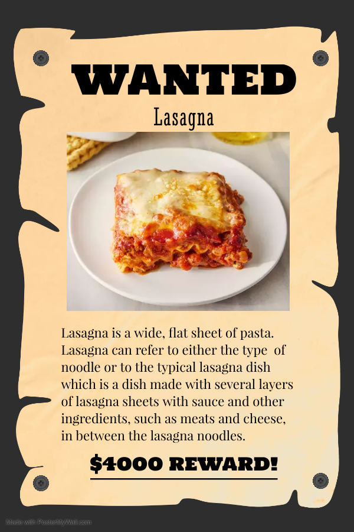

Lasagna

Description
Lasagna is a wide, flat sheet of pasta. Lasagna can refer to either the type
of noodle or to the typical lasagna dish which is a dish made with several
layers of lasagna sheets with sauce and other ingredients, such as meats
and cheese, in between the lasagna noodles.
Ingredients
1 pound sweet Italian sausage
¾ pound lean ground beef
½ cup minced onion
2 cloves garlic, crushed
1 (28 ounce) can crushed tomatoes
2 (6.5 ounce) cans canned tomato sauce
2 (6 ounce) cans tomato paste
½ cup water
2 tablespoons white sugar
4 tablespoons chopped fresh parsley, divided
1 ½ teaspoons dried basil leaves
1 ½ teaspoons salt, divided, or to taste
1 teaspoon Italian seasoning
½ teaspoon fennel seeds
¼ teaspoon ground black pepper
12 lasagna noodles
16 ounces ricotta cheese
1 egg
¾ pound mozzarella cheese, sliced
¾ cup grated Parmesan cheese
Steps
- Gather all your ingredients.
-
Cook sausage, ground beef, onion, and garlic in a Dutch oven over medium heat
until well browned.
-
Stir in crushed tomatoes, tomato sauce, tomato paste, and water. Season with
sugar, 2 tablespoons parsley, basil, 1 teaspoon salt, Italian seasoning, fennel
seeds, and pepper. Simmer, covered, for about 1 1/2 hours, stirring occasionally.
- Bring a large pot of lightly salted water to a boil. Cook lasagna noodles in
boiling water for 8 to 10 minutes. Drain noodles, and rinse with cold water.
-
In a mixing bowl, combine ricotta cheese with egg, remaining 2 tablespoons
parsley, and 1/2 teaspoon salt.
- Preheat the oven to 375 degrees F (190 degrees C).
-
To assemble, spread 1 1/2 cups of meat sauce in the bottom of a 9x13-inch
baking dish. Arrange 6 noodles lengthwise over meat sauce. Spread with 1/2 of
the ricotta cheese mixture. Top with 1/3 of the mozzarella cheese slices.
Spoon 1 1/2 cups meat sauce over mozzarella, and sprinkle with 1/4 cup Parmesan
cheese.
-
Repeat layers, and top with remaining mozzarella and Parmesan cheese. Cover
with foil: to prevent sticking, either spray foil with cooking spray or make
sure the foil does not touch the cheese.
-
Bake in the preheated oven for 25 minutes. Remove the foil and bake for an
additional 25 minutes.
- Rest lasagna for 15 minutes before serving.